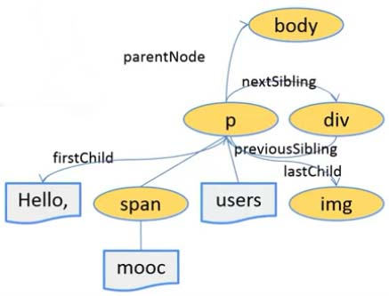

前端常见技术点 - CSS / DOM / 布局
这里总结一下 Web 前端面试中 CSS 部分的常见面试问题，同时这些问题也是对一些基础的技术概念和思想的理解。对这些基本知识的掌握程度和深度决定了你的技术层级。高级工程师是必须掌握本文列出的这些知识点，资深工程师则要对这些基本概念的纵向深度进行挖掘，【问题解答全部原创，转载请注明来源】。
CSS 技术部分：
1. 标准 CSS 的盒子模型？与低版本 IE 的盒子模型有什么不同？
IE 盒子模型的范围同标准 CSS 盒子模型一样，包括 margin、border、padding 以及 content 四部分。和标准 W3C 盒子模型不同的是：IE 盒子模型的 content 部分包含了 border 和 padding。两者分别对应于 box-sizing 属性的 content-box 和 border-box 两个值。
2. 手写动画你认为最小的时间间隔是多久？
多数显示器默认频率是 60Hz，即1秒刷新60次，所以理论上最小间隔为 1/60＊1000ms ＝ 16.7ms；
3. 在网页中的应该使用奇数还是偶数的字体？
偶数字号相对更容易和 Web 设计的其他部分构成比例关系，也是为了兼容 Windows Vista 上的点阵宋体字体（只提供了偶数字体点阵）。其他方面笔者感觉，并没有区别。
4. 设置元素浮动后，该元素的 display 值是多少？
自动变成 display: block。
5. 如何用 CSS 让页面里的字体变清晰？
设置 -webkit-font-smoothing: antialiased;（抗锯齿）
6. 如何用 CSS 创建一个三角形？
border-top:solid 100px red;
border-left:solid 100px green;
border-right:solid 100px orange;
border-bottom:solid 100px blue;
width: 0;
height: 0;
7. 如何修改 Chrome 记住密码后自动填充表单的黄色背景？
浏览器自动添加了 input: -webkit-autofill 这个私有属性。
8. 浏览器是怎样解析 CSS 选择器的？
CSS 选择器是从右往左解析的，这样效率较高，从子元素向上寻找父元素的情况在大多数正常情况下都比正向从父元素查找子元素要快得多，从左到右的查找在大多数规则读到最后（最右）才会发现是不匹配的，这样会做费时耗能，最后有很多都是无用的。
浏览器渲染过程：
- HTML -> HTML 解析器 -> DOM 树；
- 样式 -> 样式解析器 -> 样式规则；
DOM 树和样式规则进行结合形成渲染树。
9. CSS 继承：
CSS 样式继承性是指下级的样式属性会继承上级的属性，比如 li 会继承 ul 的样式属性。
10. 如何居中 div \ 浮动 \ 绝对定位元素？
对于定宽的非浮动元素我们可以在 CSS 中用 margin: 0 auto; 进行水平居中；对于浮动元素可以父子元素同时向一个方向浮动，父元素设置 left: 50%;
11. position 的值 relative 和 absolute 定位原点是？
相对定位是“相对于”元素在文档中的初始位置，而绝对定位是“相对于”最近的已定位祖先元素，如果不存在已定位的祖先元素，那么“相对于”最初的包含块。
12. ::before 和 :after 中的双冒号与单冒号有什么区别？
两个冒号和一个冒号的作用其实一致的，只是在 CSS3 中为了区分伪类选择器和伪元素选择器，在语义上更清晰明了；
伪类选择器：即伪类的效果可以通过添加一个实际的类来达到；
:hover；:link；:active；:target；:not(selector)；:focus；
伪元素选择器：即伪元素的效果是需要通过添加一个实际的元素才能达到的；
::first-letter；::first-line；::before；::after；::selection；
13. transform 属性的几种常用方法：
rotate 旋转、translate 平移、skew 倾斜、scale 缩放以及各个方法对应的 3D 版本。
transform-origin：属性设置动作原点；perspective-origin：属性设置透视方位；perspective：设置透视角度；
14. 常用的图片格式？
- PNG 可以存储 Alpha 通道，失真小，没锯齿，无损压缩，一种是 Index（体积较小），一种是 RGB，体积较大；
- GIF 可以存储动画；
- JPEG 图片色彩更加丰富，但是有损压缩，不适合多次读取储存；
- WebP 是一种谷歌开发的一种旨在加快图片加载速度的图片格式。图片压缩体积大约只有JPEG的2/3；
15. style 标签写在 body 后与 body 前有什么区别？
CSS 样式的加载顺序从上到下，同时应该符合样式的放置规范，外部. 内部. 内嵌。放在 body 里不符合规范也不利于代码维护。
16. font-style 属性的 oblique 和 italic 有什么区别？
italic 是斜体，是一种不同的字体，而 oblique 是一种仿斜体，是浏览器通过将普通字体通过变形而成的“斜体”，italic 选择字体族的 italic 变体，如果没有 italic 变体就妥协到 oblique 变体。如果字体族连 oblique 也未提供，则由浏览器合成倾斜的仿 oblique 字体。italic 和 oblique 在字体形态上有所不同。
17. 常见的移动端开发问题：
应该有很多，这里只列出笔者遇到过的一部分：
若父容器设置了 transform 属性，则其内部子元素的 position: fixed; 属性会失效；
18. 对 line-height 属性的理解：
行高指的是文本行的基线间的距离，line-height 若使用百分比则实际像素值为所有继承的元素的 font-size 乘以这个百分比，是先计算然后转换为像素值；若使用直接像素值，则所有继承元素使用相同的 line-height 值；相对来说，用纯数字指定 line-height 比较好，可以动态改变行距；段落中的行间距最好是本身 font-size 的1.5倍最好，浏览器默认行间距为1.14左右。
- containing-boxes：它包含了其他的 boxes，比如 p 本身就是一种；
- inline-boxes：让显示的内容排成一行，比如 span 元素；没有标签包裹的文字为匿名 inline-boxes；
- line-boxes：inline-boxes 在 containing-boxes 连接成了 line-boxed；
- content-area：是围绕着文字的一种看不见的 boxes，高取决于 font-size；
line-height 超出 font-size 部分的一半称为“半行间距”，它被平均的放到 content-area 的顶部和底部；
20. CSS 里的 visibility 的 collapse 属性值有什么作用和区别？
该属性兼容性各个浏览器并不统一，对于一般的元素，它的表现跟 hidden 是一样的。但例外的是，如果这个元素是 table 相关的元素，它的表现却跟 display: none 一样。
21. 视差滚动的原理：
视差滚动是指多层背景以不同的速度移动，形成立体的运动效果，带来非常出色的视觉体验。
实现原理：主要利用了 background-attachment: fixed; 属性，随着页面的滚动轴背景图片不会移动。
22. display: inline-block 什么时候会显示间隙？
浏览器的默认行为是把 inline 元素间的空白字符（空格. 换行. Tab）渲染成一个空格，这个问题不止出现在 li 元素上；
解决方案：
- 所以把所有 li 放到同一行；
- 将这些被渲染成空格的字符
font-size属性设置为 0； - 设置 letter-spacing 为适当大小；
23. z-index 栈：
z-index 只在设置了 position 属性（值非 static）的元素上生效；而父元素的 z-index 会比子元素先生效；
24. float、relative、absolute、fixed 基础重点：
- relative：参照物为元素本身，即默认情况下在文档流中的位置；
- float：元素默认宽度为内容宽度；半脱离文档流（元素脱离文档流，内容不脱离文档流，即一种“文字环绕图片”的效果）；
- absolute：元素默认宽度为内容宽度；脱离文档流；参照物为第一个定位祖先（设置了 position 并且值不是 static 的元素）/ 根元素；如果设置了 absolute 的元素没有设置宽高，则 LRTB 四个属性可以将该元素自适应抻开；
- fixed：元素默认宽度为内容宽度；脱离文档流；参照物为视窗；
float 会导致原有的 inline-boxes 消失，
25. overflow:scroll 时不能平滑滚动的问题怎么处理？
添加 -webkit-overflow-scrolling: touch; 属性。该属性创建了带有硬件加速的系统级控件，但比较耗费内存；也可以采用 iScroll 插件来解决这个问题。
26. 常见的浏览器兼容性问题有哪些？
HTML5 的兼容性问题等（笔者公司不考虑 IE10 以下的浏览器）。
27. 元素竖向的百分比设定是相对于容器的高度吗?
当按百分比设定一个元素的宽度时，它是相对于父容器的宽度计算的。但是，对于一些表示竖向距离的属性，例如 padding-top、padding-bottom、margin-top 以及 margin-bottom 等，当按百分比设定它们时，依据的也是父容器的宽度，而不是高度。
28. 两个 CSS 模型：
一个是 box 盒状模型，对应 CSS 为 “（height / width）+ padding + margin”，另外一个是 line box 模型，对应样式为 “line-height”；
29. 弹性布局：
- 弹性父容器：display: flex;
- 弹性元素：父容器的直接子元素，并且没有脱离文档流（非 absolute 属性）。
- 指定弹性容器内元素排列方向：flex-direction: row | row-reverse | column | column-reverse
- 指定弹性容器内元素换行方式：flex-wrap: no-wrap | wrap | wrap-reverse
- 指定弹性容器内元素排队和换行方式：flex-flow: [flex-direction] [flex-wrap]
- 指定弹性元素的排列权重（重的在后边）：order: <数字>
- 设置元素空余空间分配权重：flex-grow: <数字>
- 设置元素超出分配空间权重：flex-shrink: <数字>
- 设置元素在主轴方向的基础长度：flex-basis: <数字>
- 设置元素在主轴方向的弹性：flex: [flex-grow] [flex-shrink] [flex-basis]
- 指定弹性容器内元素的间隔方式：justify-content: flex-start | flex-end | center | space-between | space-arount
- 指定弹性容器内元素辅轴对齐方式：align-items: flex-start | flex-end | center | stretch | baseline
- 设置元素在主轴方向的对齐方式：align-self: flex-start | flex-end | center | stretch | baseline
- 指定弹性容器内元素的辅轴上行的对齐方式：align-content: flex-start | flex-end | center | space-between | space-arount | stretch
30. font-family: serif sans-serif：
- 衬线体 serif：意思是在字的笔画开始. 结束的地方有额外的装饰，而且笔画的粗细会有所不同。
- 非衬线体 sans-serif：没有这些额外的装饰，而且笔画的粗细差不多。
31. DOMContentLoaded 和 load 的区别：
DOM 文档的加载步骤为：
- 解析 HTML 结构；
- 加载外部脚本和样式表文件；
- 解析并执行脚本代码；
- DOM 树构建完成； // DOMContentLoaded；
- 加载图片等外部文件；
- 页面加载完毕； // load；
32. DOM 树上的各种操作：

33. children 和 childNodes 的区别？
children 只会包含元素节点，不会包含文字节点。childNodes 会包含所有子节点。
34. nextElementSibling 和 nextSibling 的区别？
nextElementSibling 只包含元素兄弟节点。nextSibling 会包含文字节点。
35. CSS DOM 概览：
window.getComputedStyle([element]); // 可以获得一个元素计算后的样式 CSSStyleDeclaration 对象；

36. DOM 属性访问器访问属性和 “g/setAttribute” 访问属性的区别？
- DOM 属性访问器：通用性差，扩展性差；但取到的是一个“实用对象”结构；
- g/setAttribute：取到的只是字符串，通用性强；
element.dataset 可以取到该 DOM 元素上所有的自定义属性，即以 “data-” 开头的属性。
37. DOM 事件触发、事件绑定与事件卸载：
- IE8 以上：
addEventListener、removeEventListener、dispatchEvent；W3C 标准； - IE8 及以下：
attachEvent、detachEvent、fireEvent；没有捕获阶段；
38. onerror 事件的常用场景：
在 img 标签加入 onerror="this.src='default.png'" 可以设置图片出错时显示的默认图片。
39. HTML 模块化构建：
40. position 属性各个值的分层关系：
static 不能通过 z-index 分层；relative、absolute 和 fixed 可以通过 z-index 分层。
首先是遵循 DOM 规则，同级的后面居上。一般有定位属性的元素会高于无定位属性的同级元素。
都有定位属性的同级元素，z-index 大者居上；
如果是非同级的元素，则会忽略元素本身 z-index，取与对比元素同级的祖先元素的 z-index 属性，大者居上。
41. 如何高效的插入 HTML 到 DOM 树的指定位置？
使用 createDocumentFragment 创建一个内存中的文档片段，将所有需要追加到页面的 HTML 都 appendChild 到这个文档片段，最后一次性的将该文档片段 appendChild 到 DOM 树上；由于拼接子元素的过程是在内存中进行的因此可以减少页面的回流和重绘；
或使用 insertAdjacentHTML([position], [text]) 直接向页面插入 HTML 片段。其中 position 分为四个值：beforebegin、afterbegin、beforeend 和 afterend；
42. em \ rem \ vh \ vw \ vmin \ vmax \ ex \ ch：
- em：现对于父元素的字体大小；
- rem：相对于根元素 html 的字体大小；
- vh\vw：其中的 v 表示 viewpoint 视窗，所以这两个大小单位代表相对于当前视窗的大小，1vh\vw 相当于百分之1的视窗高度\宽度；
- vmin\vmax：同上，其中的 v 表示 viewpoint，vmin 取 vh\vw 中两者较小的作为单位，vmax 则相反。
- ch：常与等宽字体联合使用 “Consolas，Monaco，monospace”。1ch 表示一个0字符的宽度，因此只有在等宽字体的情况下，我们才能用 ch 来精确的调整字符的显示。
- ex：相对长度单位。相对于字符 “x” 的高度。通常为字体高度的一半。利用 ex 可以实现内联图标与段落的垂直居中。